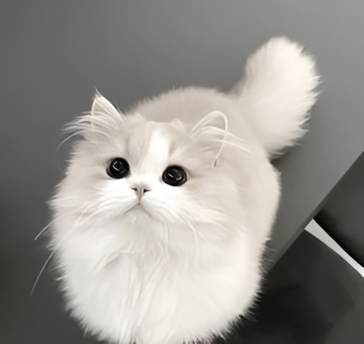
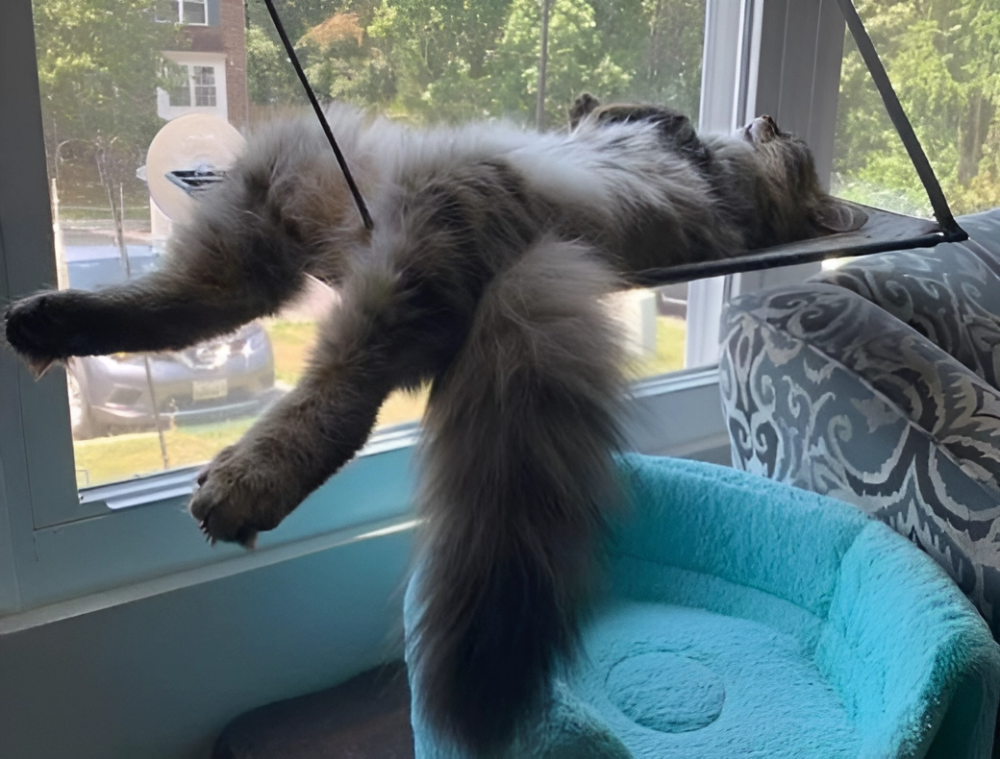
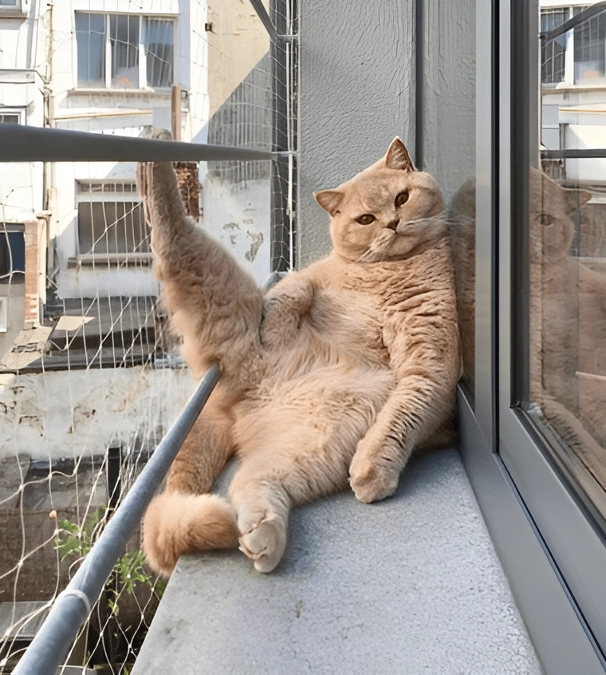
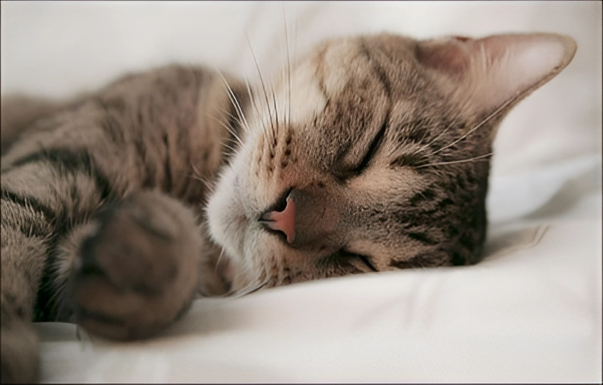

The domestic cat is a mammal of the cat family of the order Carnivora.
Biology

The normal internal body temperature of an adult cat is +38…+39.5 °C; in kittens it is slightly higher.
The heart rate in adult cats varies depending on physical and mental activity and ranges from 120 to 220 beats per minute. The respiratory rate averages 20-40 respiratory movements per minute.
Anatomy
The average body length of a cat without a tail is 60 cm, the length of the tail is 25-35 cm.
The weight of an average healthy cat is 2.5-6.5 kg, but there are also larger specimens whose weight reaches 7-9 kg. Siberian and Maine Coon cats can reach a weight of 11.5-13 kg.
The cat's skeleton is made up of approximately 240 bones.
Lifespan
The average lifespan of cats is 14 years.
Dream
Domestic adult cats can sleep or rest 50% of their time. Some cats sleep 20 hours a day, but the average sleep duration is 13-14 hours a day.
Game
At home, cats love to play with small objects: balls, sticks, crumpled paper, special toys for cats. Cats are often attracted to dangling and suspended objects, as they have the ability to move in the air, which imitates the cat's hunting of birds.
Food
To establish nutrition in your new home, choose foods that your cat is already familiar with. The previous food should form the basis of the diet for at least two weeks. But in the future it can be gradually replaced with a new one.
An adult cat's diet should consist of 70% animal protein and 30% fat and carbohydrates.
A domestic cat should eat several small meals a day and eat at the same time. Therefore, it is better to give food on a schedule, and in between feedings, remove the bowl out of reach.
Choose the right cookware. It is better to feed your cat from metal bowls. They do not break and do not accumulate unpleasant odors.
Procedures
 6 procedures
 |
coming wool |
|
cat bathing |
|
nail trimming |
|
ear cleaning |
|
rubbing eyes |
|
oral hygiene |
Some necessary things
Bed. This is a comfortable place to sleep where your kitten or cat will feel comfortable and safe. It is recommended to place the bed higher up, preferably in a quiet place that is safe for the kitten, away from drafts.
Tray. It should be deep enough, but not too deep, as high walls can scare the kitten away. You will also need a scoop to remove the poop.
Scratching post. Allows the cat to sharpen its claws.